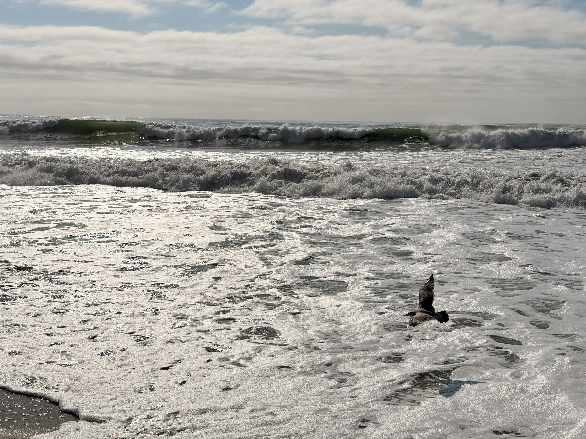
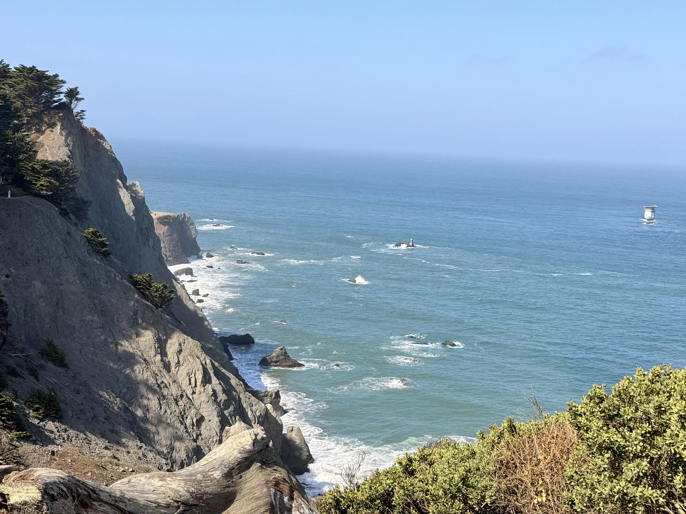

Naturfotografi handler om at indfange stemninger gennem lys, farver og komposition i landskaber og planter.
Jeg har valgt naturbilleder, fordi de skaber ro og giver plads til at arbejde med bløde overgange og naturlige farvetoner.
Især morgen- og aftenslys giver dybde og en mere harmonisk stemning i billederne.
Galleri




Tips og tricks
- Fotografer i blødt morgen- eller aftenlys.
- Brug naturlige linjer til at guide øjet i billedet.
- Udnyt tåge eller vand til at skabe stemning.
- Hold kompositionen enkel.
- Arbejd med dybde i landskabet.